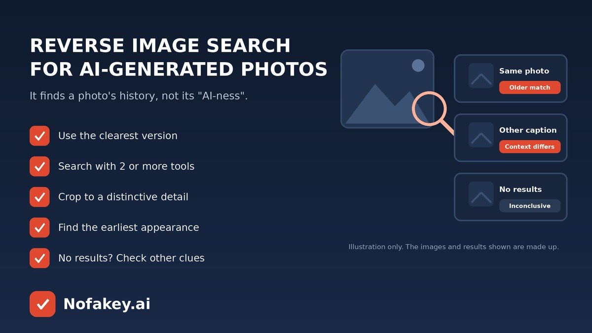

A dramatic photo is flying around your feed. Is it real, old, edited or made by AI? Reverse image search is one of the quickest checks you can run, and it takes less than a minute. But it works differently from what many people expect. It doesn’t say “this is AI.” It shows where an image has appeared before, and that history can tell you a lot. This guide explains how to use it, how to read the results, and what to do when it finds nothing.
What reverse image search can and can’t do
| It can help you | It can’t reliably tell you |
|---|---|
| Find older or original versions of a photo | Whether a brand-new image was made by AI |
| Spot a real photo reused with a false caption | That “no results” means the photo is fake, or real |
| See which pages, accounts and dates are linked to it | Who created it, or which tool was used |
| Find similar images that reveal edits or variations | Whether a match is the true original |
How to run a reverse image search
- Get the best version. Use the largest, clearest copy you can find. Avoid cropped screenshots with text overlays if you can.
- Use your browser or phone. Many browsers let you right-click or long-press an image and search with it. Photo apps often have a built-in image search too.
- Try a dedicated reverse image search site as well. Different tools index different parts of the web, so try at least two.
- Crop to what’s distinctive. Search a landmark, an object or a background detail on its own. Avoid uploading private photos of people, especially children.
- Add words. Pair the image with a short description, like “flooded street” plus the place named in the post.
- Sort by date. Look for the earliest appearance and check who posted it first.
How to read the results
| What you see | What it might mean |
|---|---|
| Exact match, much older | The photo is being reused. It may be real, but not from this event. |
| Same photo, different story | The caption or location is likely wrong. Trust the earliest credible source. |
| Similar images, details differ | It may be an edited or AI-made variation. Look closely at what changed. |
| Match on an art or stock site | It may be illustration or generated art, or a licensed photo. Check the credit and description. |
| No results at all | Inconclusive. It could be new, private, edited or AI generated. |
What else to check when the search comes up empty
- Zoom in. Look for garbled text, warped edges, odd hands, mismatched shadows and details that don’t make sense. See our guide to product photos made with AI for a visual checklist that applies to many images.
- Look for labels. Some platforms and tools mark AI content or attach content credentials. They can be missing or stripped, so a lack of a label proves nothing.
- Check the poster. A new, anonymous or engagement-hungry account is a warning sign.
- Search the story. See whether trusted outlets, officials or the people involved confirm it.
- Look at related media. Fake photos often come with fake clips. See how to know if a video is AI generated.
AI image detectors can add one more clue, but they also make mistakes. Read are AI detectors accurate? before trusting a score. If a photo came with a link, offer or message, paste that text into our free checker for a quick first read.
Frequently asked questions
Can reverse image search tell me if a photo is AI generated?
Not directly. It finds where an image or similar images appear online. That can reveal reused, older or misattributed photos, but a brand-new AI image may have no matches. Use it as one clue, not a verdict.
What does it mean if reverse image search finds nothing?
It is inconclusive. The photo could be new, private, heavily edited or AI generated, or the search tool may simply not have indexed it. Try other checks and look for the original source.
How do I get better reverse image search results?
Use the largest, clearest version you can find, crop to a distinctive object, background or landmark, try more than one search tool, and add a short text description of what the image shows.
What else can I check besides reverse image search?
Zoom in for visual slips such as garbled text, warped edges and mismatched shadows, look for content credentials or platform labels, check who posted it first, and see whether trusted outlets confirm the story.
Is it safe to upload photos for a reverse image search?
Be careful with private photos, especially of children or documents. Only upload what you are comfortable sharing, and check how the tool stores and uses uploads.
Conclusion
Reverse image search won’t shout “AI,” but it is one of the best ways to learn a photo’s past. Use it to find the earliest version and any mismatched captions, treat “no results” as a question mark, and back it up with a careful look and a source check. Find more guides on the Nofakey.ai blog.
Got a suspicious message, link or email to check?
Run it through the checker